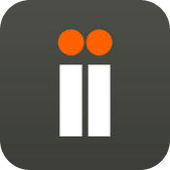
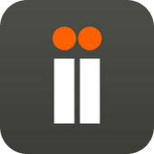
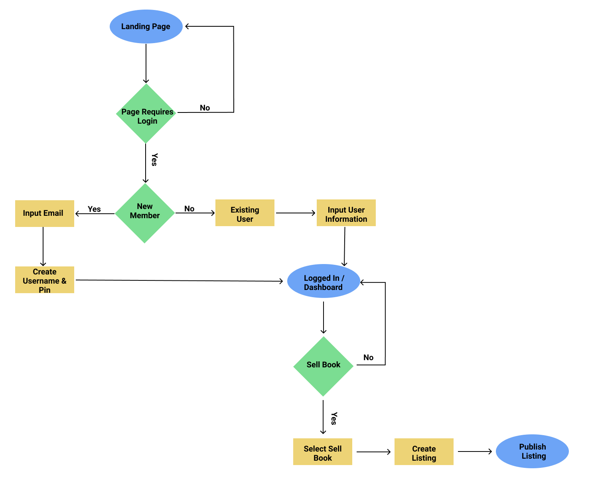
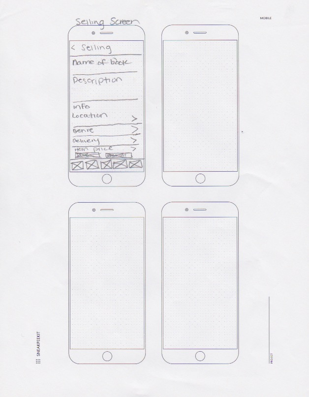
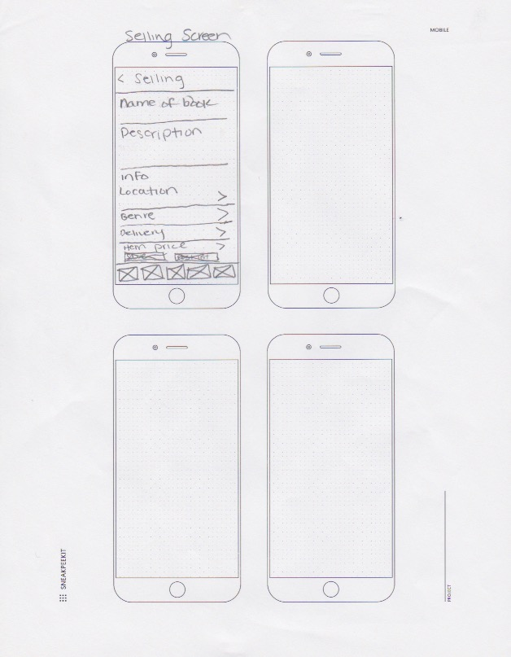
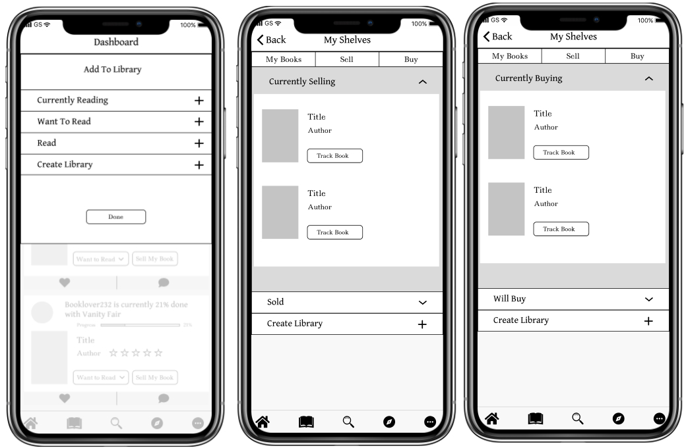
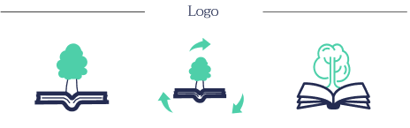
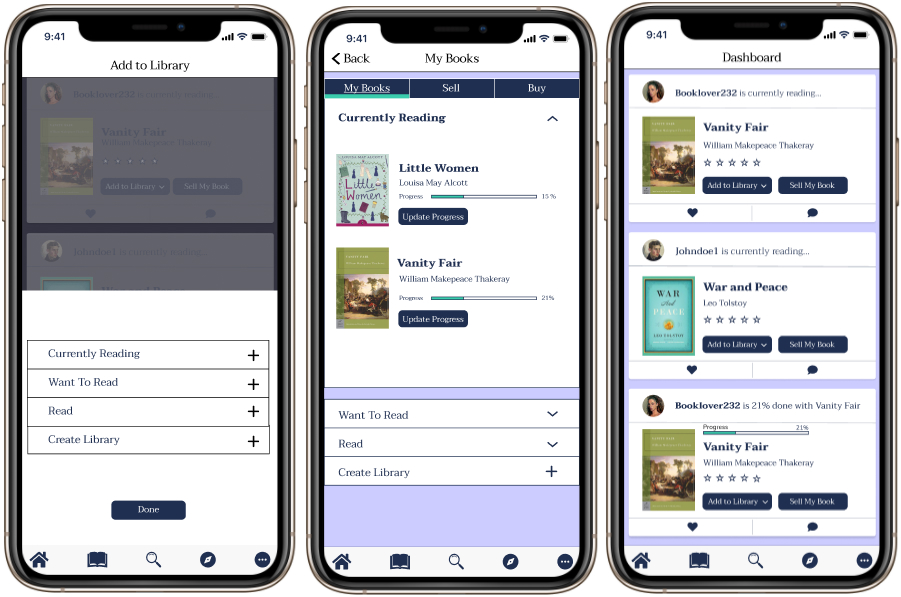

VL industries, a fictional company wants to help create a mobile app to help:
My solution to this brief is Vivre Livre, a mobile platform focused on:
My research goal was to understand the users reading habits and how they discover books they like and how they track books that they like. Additionally, I wanted to figure out which features users deemed the most important when creating this mobile application. Once I sent this out to friends and family and received feedback, I noticed a few things:
With this information in mind, I started thinking of a way to create a platform that could provide not only user friendliness or simplicity, but provide a place to stay connected with other book lovers and sell preloved books to other users.
I performed a competitive analysis of a diverse range of book applications that each brought something different to the mobile book app market. I analyzed Goodreads because it was the market leader in this industry and the most recognizable in my survey. I also analyzed LibraryThing and Anobii because they were tied for being second well known in my survey and in the market.
 

With these competitors in mind, a new potential platform can a cleaner more modern interface compared to goodreads. This competitor can additionally provide constant application updates that can eliminate crashes while in the middle of performing an action. Lastly, a new competitor could incorporate sustainability practices, like adding a feature to plant trees whenever a user creates a new account, or collaborating with an eco friendly shipping company, and even giving the user an option to provide their own packaging when selling their preloved books.
Full SWOT

Now it was time to gather more data to create user personas. I interviewed three people in person to talk in depth about their experiences when it came to other book applications. Asking them questions, like if they were avid book readers and how many books they read in the course of a month, or two.
Full User PersonasNext I started sketching out possible flows to accomplish the goals of the user stories. I observed the ways Goodreads and LibraryThing designed their flows and created a user flow that seemed the most straight forward into digital versions


 

Once my wireframes were drawn out, I started testing these out right away with real people. During my first round of usability tests I asked participants to complete three tasks. These three tasks included, Sell a book, add a book to your library and finally, find book information. Once these tasks were completed I received feedback highlighting a few improvements.
Since my tasks were fairly simple and straight forward, the feedback I had received from where mainly in regards to my user interface. One user stated that using a modal on a mobile application was not ideal as it is hard to interpret. A second user then stated that the arrows on my shelves screen where confusing. They stated that I should make those intensions a little more clear since all the arrows are facing certain directions which should indicate that the first should be open, and the other two folders should be closed.
See Full Wireframes

When sketching out the logo I initially played around with just the lettering to see if anything resumbled what I wanted. However, that approach was not working, so I started to think of what exactly my app will be and started to sketch different variations of an open book and a tree sprouting out of it. This idea really resonated with me because I wanted to emphasize sustainability as a major part of this brand.

Vivre Livre isn't just about books it's about bringing a community together. The name Vivre Livre was a good fit for this app because it seemed like such a unique name that it would stick with the user. Vivre which is french means many things, it means to live, to share, to experience. I want users to not only share their love for books, but to share the experiences they had while reading the book and using this app. Then, Livre means book, which of course is also fitting because this app is aimed toward book lovers.

Lastly, I wanted this app to be clean, cool, calm, friendly, modern, and simple for users. I had incorporated cool tones into my color scheme, like blues, and greens and then added them to my icons and user interface. Then in regards to my font scheme, I chose Taviraj and Muli because of the clean contrast and not have it be overwhelming for users.

With my high fidelity mockups, I moved the modal to the bottom of the screen so it was a bit more user friendly. Then, I changed the arrows so their intensions look clearer to the user. Next, when designing the other frames of my application I referred to other websites for ideas. For example, I referred to amazon's book details page and incorporated it into my "Where to Buy It" section of my app. Lastly, I referred to another second hand app that I used called depop and incorporated the sell page to my sell book frame
 View PrototypeAfter I finished putting together my first high fidelity mockup, I performed another round of usability tests performing the same tasks, but with different participants. I also received feed back on the user interface, as well as the design of my high fidelity app. One participant stated that my dashboard icons where too dark and the contrast seemed a little off. Another participant stated that the more tab had a lot of tabs and that it looked a little overwhelming to the eye. Lastly, I had the same participant also state that my book images and icons where a little too small for their thumb and to possibly consider making them a little bigger.

In my final iterations, I provided the changes from the feedback that the participants made during my second usablitiy test. Some additional changes that were made in my final protoype include making the application more modern, and removing any visual noise like outlines. I also improved the landing page and added a new image as well as making my dashboard a little more interactive to the user.
View PrototypeIn conclusion, if given more time to improve my mobile application any further I would definitley add a few more questions on my user survey. Questions pertaining more specifically towards the sustainability portion of my app. For example, I would ask if users thought having the option of providing their own shipping boxes when selling a book, or if collaborating with a eco friendly shipping company would be a good fit, or lastly, even providing post consumer packaging would be a better fit. Or even asking the users if providing all three would as an option would be beneficial. I would also do more research in different eco friendly shipping companies and see do research on different shipping costs. With that being said I would like to thank you for taking the time to read my case study. Thank you!